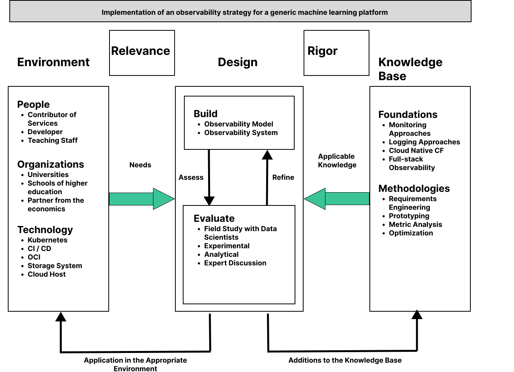

An Observability System for the DaFne Platform
Observability in a Kubernetes based ML-Platform
Sebastian Gedigk 1
sebastian.gedigk@haw-hamburg.de
1 Department of Computer Science, University of Applied Sciences Hamburg (HAW)
Problem
The research project DaFne from the University of Applied Sciences Hamburg builds a generic machine learning platform. This platform is based on Kubernetes and has a microservice architecture. Observability is the key to successfully run this platform. Observability comprises a wide range of topics like monitoring, logging, tracing, and measuring [2]. At this point, the DaFne platform has neither an observability model nor an observability strategy. So this brings up the following research question RQ: How can the DaFne platform reach observability?
Input Knowledge
The platform has multiple usecases like data generation, neighborhood generation, agent-based generation of mobility data and maybe some more in the future. All these usecases have one aspect in common, they use machine learning algorithms to generate and evaluate data. Against this background, we need to check the metrics of the platform and monitor the health status of the applications. It is important to log both requests to the platform and output from each service. This information makes it possible to detect bottlenecks and failures [1].
Research Process
The research process for developing an observability model/system for the DaFne platform contains literature review, research for related solutions and experiments. It is planned to build an iterative approach for building and evaluating the observability model. In the end, the goal is to develop a strategy for implementing the observability model.

Figure 1: The Design Science Research Framework adapted from Hevner et. al.[3]
Figure 1 shows how this research is embedded into the concept of Design Science Research and how the design will be influenced by existing methodologies and foundations. Besides that, it shows how the observability strategy and model finds application for people and organizations who use the platform. Model and strategy will be evaluated for example by experts or in field studies in order to be refined and approved [4].
Concepts
The main concept in the research for tracking the information of the DaFne platform is Full-stack observability. Full-stack observability [2] is the completest package for cloud native applications. It needs to be considered in the architecture because it makes the “-ilities” seeable. Furthermore, this concept covers all individual strands such as monitoring, logging and tracing.![Overview Full-stack observability[@Goniwada.2022b]](images/Full-stack%20Observability.svg)
Figure 2: Overview Full-stack observability[2]
As seen in Figure 2 this approach covers the three most important parts of a system security, infrastructure and application. Full-stack observability is based on one source of truth. The resulting data and metadata can then be used to analyze and improve the DaFne platform itself using AI algorithms.
Solution
The aspired solution for the RQ is the development of an architecture model based on the concept of full-stack observability. This includes the use of various monitoring, logging and measurement tools that can send their data to a common data lake. Deciding which tools are a good fit for the platform is part of the research process and influences the architectural model. All data collected by the tools must be stored in a single source. This reduces the workload on the network and the services. It also makes it easier to access the data because it is all bundled together from where the visualization accesses the data. Visualization helps identify bottlenecks and makes it easier to see the big picture of the system. An important component is the real-time view of the system and especially of the infrastructure resources. This is because a lot of data is calculated on the platform using ML algorithms. It is useful to see whether the system’s resources are sufficient and being used fairly. Kubernetes offers several APIs for measuring pods, containers and services. A standard for logging in the services should also be defined in the course of the investigation.
Output Knowledge
The outcome of this research will be an observability model and observability strategy for the DaFne platform. These artifacts are evaluated by partners from the project group and adapted in several iterations. The evaluation will also be carried out through experiments on the prototype. In further work, this research will be implemented and the results will be documented.
References
1.
Arundel, J., Domingus, J.: Cloud native DevOps mit kubernetes: Bauen, deployen und skalieren moderner anwendungen in der cloud. dpunkt.verlag, Heidelberg (2019).
2.
Goniwada, S.R.: Observability. In: Goniwada, S.R. (ed.) Cloud native architecture and design. pp. 661–676 Apress, Berkeley, CA (2022). https://doi.org/10.1007/978-1-4842-7226-8_19.
3.
Hevner et al.: Design science in information systems research. MIS Quarterly. 28, 1, 75 (2004). https://doi.org/10.2307/25148625.
4.
vom Brocke, J. et al. eds: Design science research: cases. Springer, Cham, Switzerland (2020).